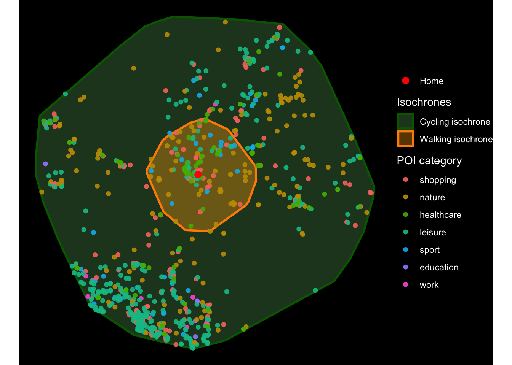

library(jsonlite)
library(tidyverse)
library(lubridate)
library(sf)
library(tmap)
library(mapview)
library(nnet)
library(ggplot2)
library(scales)
library(dplyr)
library(tidyr)
knitr::opts_chunk$set(
message = FALSE,
warning = FALSE
)
tmap_mode("view")Data preprocessing and accessibility analysis
Load libraries and settings
Create a bibliography for the packages
packages_used <- c(
"jsonlite",
"tidyverse",
"dplyr",
"tidyr",
"purrr",
"tibble",
"lubridate",
"sf",
"osmdata",
"dodgr",
"ggplot2",
"tmap",
"mapview"
)
knitr::write_bib(
packages_used,
file = "packages.bib",
prefix = "R-"
)Define helper functions and constants
activity_levels <- c(
"shopping",
"nature",
"healthcare",
"leisure",
"sport",
"education",
"work",
"social",
"home",
"movement",
"transport",
"unknown"
)
analysis_activity_levels <- c(
"shopping",
"nature",
"healthcare",
"leisure",
"sport",
"education",
"work"
)
home_sf <- st_sf(
geometry = st_sfc(st_point(c(8.546069, 47.409620))),
crs = 4326
)
create_output_folders <- function() {
dir.create("outputs/isochrones_all", recursive = TRUE, showWarnings = FALSE)
dir.create("outputs/isochrones_sansebike", recursive = TRUE, showWarnings = FALSE)
dir.create("outputs/pois_all", recursive = TRUE, showWarnings = FALSE)
dir.create("outputs/pois_sansebike", recursive = TRUE, showWarnings = FALSE)
}
deduplicate_pois <- function(x) {
dedup_cols <- intersect(
c("osm_id", "name", "poi_category", "poi_subcategory"),
names(x)
)
if (length(dedup_cols) == 0) {
return(x)
}
x |>
distinct(across(all_of(dedup_cols)), .keep_all = TRUE)
}
recode_poi_categories <- function(x) {
if (!"poi_category_original" %in% names(x)) {
x <- x |>
mutate(poi_category_original = poi_category)
}
x |>
mutate(
poi_activity_category = case_when(
poi_category %in% c("Groceries") ~ "shopping",
poi_category %in% c("Park / forest") ~ "nature",
poi_category %in% c("Pharmacy / doctor", "Pharmacy / doctor / doctors") ~ "healthcare",
poi_category %in% c("Restaurants") ~ "leisure",
poi_category %in% c("Sport") ~ "sport",
poi_category %in% c("University") ~ "education",
poi_category %in% c("Work") ~ "work",
TRUE ~ "unknown"
),
poi_activity_category = factor(
poi_activity_category,
levels = c(analysis_activity_levels, "unknown")
)
)
}
is_within_mode <- function(points, polygons, mode_name) {
polygons_mode <- polygons |>
filter(mode == mode_name)
lengths(st_within(points, polygons_mode)) > 0
}Load Google Timeline data
timeline_raw <- fromJSON("timeline.json", flatten = TRUE)
names(timeline_raw) [1] "endTime" "startTime"
[3] "timelinePath" "visit.hierarchyLevel"
[5] "visit.probability" "visit.isTimelessVisit"
[7] "visit.topCandidate.probability" "visit.topCandidate.semanticType"
[9] "visit.topCandidate.placeID" "visit.topCandidate.placeLocation"
[11] "activity.probability" "activity.end"
[13] "activity.distanceMeters" "activity.start"
[15] "activity.topCandidate.type" "activity.topCandidate.probability"glimpse(timeline_raw)Rows: 1,336
Columns: 16
$ endTime <chr> "2026-03-04T17:40:50.000+01:00", "20…
$ startTime <chr> "2026-03-04T16:08:48.010+01:00", "20…
$ timelinePath <list> <NULL>, <NULL>, <NULL>, <NULL>, <NU…
$ visit.hierarchyLevel <chr> "0", NA, NA, NA, "0", NA, "0", NA, N…
$ visit.probability <chr> "0.779056", NA, NA, NA, "0.725025", …
$ visit.isTimelessVisit <chr> NA, NA, NA, NA, NA, NA, NA, NA, NA, …
$ visit.topCandidate.probability <chr> "0.528044", NA, NA, NA, "0.357672", …
$ visit.topCandidate.semanticType <chr> "Home", NA, NA, NA, "Unknown", NA, "…
$ visit.topCandidate.placeID <chr> "ChIJpbEFXIAKkEcRakasHhqE6-Y", NA, N…
$ visit.topCandidate.placeLocation <chr> "geo:47.406967,8.549913", NA, NA, NA…
$ activity.probability <chr> NA, "0.961114", "0.991149", "0.62617…
$ activity.end <chr> NA, "geo:47.406085,8.548405", "geo:4…
$ activity.distanceMeters <chr> NA, "80.271576", "3631.161377", "227…
$ activity.start <chr> NA, "geo:47.406357,8.549391", "geo:4…
$ activity.topCandidate.type <chr> NA, "walking", "in tram", "walking",…
$ activity.topCandidate.probability <chr> NA, "0.763010", "0.755614", "0.53380…Clean Timeline data
timeline <- timeline_raw |>
mutate(
start_time = ymd_hms(startTime),
end_time = ymd_hms(endTime),
duration_min = as.numeric(difftime(end_time, start_time, units = "mins")),
date = as_date(start_time),
weekday = wday(start_time, label = TRUE, week_start = 1),
hour = hour(start_time),
record_type = case_when(
!is.na(activity.distanceMeters) ~ "movement",
!is.na(visit.probability) ~ "visit",
TRUE ~ "unknown"
),
location = case_when(
record_type == "movement" ~ activity.start,
record_type == "visit" ~ visit.topCandidate.placeLocation,
TRUE ~ NA_character_
),
lat = as.numeric(str_extract(location, "(?<=geo:)[0-9.-]+")),
lon = as.numeric(str_extract(location, "(?<=,)[0-9.-]+")),
transport_mode = activity.topCandidate.type,
placeID = visit.topCandidate.placeID,
activity_category = NA_character_
) |>
select(
start_time,
end_time,
duration_min,
date,
weekday,
hour,
record_type,
transport_mode,
activity_category,
placeID,
lat,
lon
) |>
filter(!is.na(lat), !is.na(lon)) |>
arrange(start_time)Convert Timeline data to spatial format
timeline_sf <- timeline |>
st_as_sf(coords = c("lon", "lat"), crs = 4326) |>
st_transform(2056)
coords <- st_coordinates(timeline_sf)
timeline_sf <- timeline_sf |>
mutate(
E = coords[, 1],
N = coords[, 2]
)Define activity categories
activity_categories <- tibble::tribble(
~Category, ~Includes,
"transport", "Train stations, tram stops, bus stops, airports. These are reclassified as transport rather than visit activities.",
"home", "Residence",
"education", "University, school",
"work", "Workplace",
"shopping", "Supermarket, stores, post office",
"leisure", "Restaurants, bars, cinema, culture",
"sport", "Gym, climbing, swimming",
"nature", "Hikes, parks, mountains",
"social", "Friends and family",
"movement", "No POI. Reclassified as movement rather than visit activity.",
"healthcare", "Doctor, pharmacy",
"unknown", "Unresolved"
)
activity_categories# A tibble: 12 × 2
Category Includes
<chr> <chr>
1 transport Train stations, tram stops, bus stops, airports. These are reclas…
2 home Residence
3 education University, school
4 work Workplace
5 shopping Supermarket, stores, post office
6 leisure Restaurants, bars, cinema, culture
7 sport Gym, climbing, swimming
8 nature Hikes, parks, mountains
9 social Friends and family
10 movement No POI. Reclassified as movement rather than visit activity.
11 healthcare Doctor, pharmacy
12 unknown Unresolved #export activity categories
# Export table as CSV
readr::write_csv(
activity_categories,
"outputs/activity_categories.csv"
)Prepare unique visited places
visits <- timeline_sf |>
filter(record_type == "visit") |>
distinct(placeID, .keep_all = TRUE) |>
arrange(placeID) |>
mutate(place_number = row_number())
timeline_sf <- timeline_sf |>
left_join(
visits |>
st_drop_geometry() |>
select(placeID, place_number),
by = "placeID"
)Add manual activity labels
manual_place_labels <- tibble(
place_number = 1:167,
activity_category = c(
"shopping", "movement", "leisure", "movement", "work", "transport", "social", "transport",
"education", "movement", "social", "nature", "sport", "education", "healthcare", "shopping",
"movement", "education", "leisure", "transport", "leisure", "movement", "movement", "shopping",
"transport", "shopping", "movement", "movement", "social", "social", "leisure", "movement",
"transport", "sport", "movement", "transport", "sport", "social", "leisure", "shopping",
"leisure", "shopping", "leisure", "movement", "leisure", "leisure", "nature", "movement",
"social", "transport", "movement", "nature", "movement", "movement", "movement", "shopping",
"education", "nature", "nature", "transport", "social", "nature", "social", "shopping",
"healthcare", "social", "movement", "sport", "movement", "movement", "transport", "shopping",
"movement", "movement", "movement", "nature", "social", "leisure", "nature", "social",
"social", "movement", "shopping", "transport", "movement", "movement", "leisure", "transport",
"healthcare", "transport", "education", "nature", "shopping", "movement", "transport", "movement",
"shopping", "education", "education", "transport", "movement", "movement", "social", "leisure",
"shopping", "shopping", "shopping", "movement", "shopping", "transport", "leisure", "movement",
"movement", "movement", "social", "movement", "shopping", "shopping", "movement", "transport",
"shopping", "transport", "leisure", "shopping", "education", "nature", "leisure", "shopping",
"social", "transport", "transport", "healthcare", "movement", "movement", "transport", "leisure",
"leisure", "movement", "movement", "leisure", "shopping", "transport", "education", "home",
"transport", "social", "social", "nature", "movement", "movement", "education", "movement",
"leisure", "transport", "shopping", "transport", "movement", "movement", "education", "movement",
"sport", "education", "sport", "sport", "leisure", "nature", "social"
)
)
visits <- visits |>
select(-any_of("activity_category")) |>
left_join(manual_place_labels, by = "place_number") |>
mutate(
activity_category = tidyr::replace_na(activity_category, "unknown"),
activity_category = factor(activity_category, levels = activity_levels)
)
visits |>
st_drop_geometry() |>
count(activity_category, sort = TRUE) activity_category n
1 movement 45
2 transport 24
3 shopping 23
4 leisure 20
5 social 18
6 nature 12
7 education 12
8 sport 7
9 healthcare 4
10 work 1
11 home 1Merge labels back to Timeline data
timeline_sf <- timeline_sf |>
left_join(
visits |>
st_drop_geometry() |>
select(placeID, activity_category),
by = "placeID",
suffix = c("", "_labelled")
) |>
mutate(
activity_category = coalesce(
as.character(activity_category_labelled),
as.character(activity_category)
)
) |>
select(-activity_category_labelled)
timeline_sf |>
filter(record_type == "visit") |>
count(activity_category, sort = TRUE)Simple feature collection with 11 features and 2 fields
Geometry type: GEOMETRY
Dimension: XY
Bounding box: xmin: 2380425 ymin: 1149298 xmax: 2793758 ymax: 1943799
Projected CRS: CH1903+ / LV95
First 10 features:
activity_category n geometry
1 home 108 POINT (2683877 1251277)
2 transport 68 MULTIPOINT ((2382331 163662...
3 movement 57 MULTIPOINT ((2380785 164014...
4 social 36 MULTIPOINT ((2380628 164037...
5 shopping 28 MULTIPOINT ((2380425 164090...
6 leisure 27 MULTIPOINT ((2383144 163808...
7 education 26 MULTIPOINT ((2680574 125141...
8 sport 21 MULTIPOINT ((2683429 124725...
9 nature 12 MULTIPOINT ((2541767 115056...
10 work 8 POINT (2683960 1246650)timeline_sf <- timeline_sf |>
mutate(
record_type = case_when(
activity_category %in% c("movement", "transport") ~ activity_category,
TRUE ~ record_type
),
activity_category = case_when(
activity_category %in% c("movement", "transport") ~ NA_character_,
TRUE ~ activity_category
)
)
movements <- timeline_sf |>
filter(record_type == "movement")
visits_labelled <- timeline_sf |>
filter(record_type == "visit")Prepare data for the classification model
model_data <- visits_labelled |>
st_drop_geometry() |>
filter(!is.na(activity_category)) |>
mutate(
activity_category = as.factor(activity_category),
weekday = as.factor(weekday),
is_weekend = weekday %in% c("Sat", "Sun")
) |>
select(
activity_category,
duration_min,
weekday,
hour,
is_weekend,
E,
N
)
set.seed(123)
train_index <- sample(
seq_len(nrow(model_data)),
size = 0.7 * nrow(model_data)
)
train_data <- model_data[train_index, ]
test_data <- model_data[-train_index, ]Train and evaluate the classification model
activity_model <- multinom(
activity_category ~ duration_min + weekday + hour + is_weekend + E + N,
data = train_data,
trace = FALSE
)
test_predictions <- test_data |>
mutate(
predicted_category = predict(activity_model, newdata = test_data)
)
confusion_matrix <- table(
Manual = test_predictions$activity_category,
Predicted = test_predictions$predicted_category
)
confusion_matrix Predicted
Manual education healthcare home leisure nature shopping social sport
education 3 0 5 1 0 0 0 0
healthcare 0 0 0 0 0 1 1 0
home 1 0 25 1 0 2 0 2
leisure 0 0 4 0 0 1 0 1
nature 0 0 0 0 1 0 0 1
shopping 2 0 0 0 0 6 0 0
social 0 0 1 3 0 1 6 0
sport 2 0 0 0 0 0 0 4
work 0 0 3 0 0 0 0 0
Predicted
Manual work
education 0
healthcare 0
home 1
leisure 0
nature 0
shopping 0
social 0
sport 0
work 2accuracy <- mean(
test_predictions$activity_category == test_predictions$predicted_category
)
accuracy[1] 0.5802469Visualize classification performance
p_confusion <- test_predictions |>
count(activity_category, predicted_category) |>
ggplot(aes(
x = activity_category,
y = predicted_category,
fill = n
)) +
geom_tile(color = "white") +
geom_text(aes(label = n), color = "black") +
scale_fill_gradientn(
colors = c("#f7fbff", "#c6dbef", "#6baed6", "#2171b5", "#08306b")
) +
labs(
x = "Manual classification",
y = "Model prediction",
fill = "Number of visits"
) +
theme_minimal()
p_confusion
ggsave(
filename = "outputs/plots/p_confusion.png",
plot = p_confusion,
width = 8,
height = 6,
dpi = 300
)Apply the model to all labelled visits
prediction_data <- visits_labelled |>
st_drop_geometry() |>
mutate(
weekday = as.factor(weekday),
is_weekend = weekday %in% c("Sat", "Sun")
)
predictions <- predict(
activity_model,
newdata = prediction_data
)
visits_labelled_predicted <- visits_labelled |>
mutate(
predicted_activity_category = predictions
)
visits_labelled_predicted |>
st_drop_geometry() |>
select(
placeID,
start_time,
activity_category,
predicted_activity_category
) |>
mutate(
correct = activity_category == predicted_activity_category
) |>
count(correct) correct n
1 FALSE 87
2 TRUE 183visits_labelled_predicted_accuracy <- visits_labelled_predicted |>
st_drop_geometry() |>
summarise(
accuracy = mean(activity_category == predicted_activity_category)
)
visits_labelled_predicted_accuracy accuracy
1 0.6777778Statistical test against the majority-class baseline
n_correct <- sum(
test_predictions$activity_category == test_predictions$predicted_category
)
n_total <- nrow(test_predictions)
class_distribution <- prop.table(table(model_data$activity_category))
class_distribution
education healthcare home leisure nature shopping social
0.09629630 0.01481481 0.40000000 0.10000000 0.04444444 0.10370370 0.13333333
sport work
0.07777778 0.02962963 baseline <- max(class_distribution)
binom_test_result <- binom.test(
x = n_correct,
n = n_total,
p = baseline
)
binom_test_result
Exact binomial test
data: n_correct and n_total
number of successes = 47, number of trials = 81, p-value = 0.001345
alternative hypothesis: true probability of success is not equal to 0.4
95 percent confidence interval:
0.4653608 0.6890878
sample estimates:
probability of success
0.5802469 Load isochrones and POI data
isochrones_15min <- readRDS("outputs/isochrones_15min.rds") |>
st_make_valid()
pois_by_iso <- readRDS("outputs/pois_by_iso.rds") |>
st_make_valid() |>
recode_poi_categories()
isochrones_15min <- isochrones_15min |>
st_transform(st_crs(visits_labelled))
pois_by_iso <- pois_by_iso |>
st_transform(st_crs(visits_labelled))
unique(isochrones_15min$mode)[1] "Walking" "Cycling" "E-bike" unique(pois_by_iso$mode)[1] "E-bike" "Cycling" "Walking"names(pois_by_iso) [1] "osm_id" "name"
[3] "addr:city" "addr:country"
[5] "addr:door" "addr:floor"
[7] "addr:housenumber" "addr:postcode"
[9] "addr:street" "building:levels"
[11] "check_date" "check_date:currency:XBT"
[13] "consulting" "contact:email"
[15] "currency:XBT" "email"
[17] "level" "office"
[19] "opening_hours" "operator"
[21] "payment:lightning" "payment:lightning_contactless"
[23] "payment:onchain" "phone"
[25] "survey:date" "website"
[27] "wheelchair" "source_geometry"
[29] "poi_category" "poi_subcategory"
[31] "osm_key" "osm_value"
[33] "building" "owner"
[35] "start_date" "alt_name"
[37] "contact:city" "contact:housenumber"
[39] "contact:phone" "contact:pinterest"
[41] "contact:postcode" "fee"
[43] "leisure" "seasonal"
[45] "sport" "swimming_pool"
[47] "wikidata" "wikimedia_commons"
[49] "wikipedia" "amenity"
[51] "bath:type" "bath:open_air"
[53] "description" "name:de"
[55] "name:gsw" "branch"
[57] "brand" "brand:wikidata"
[59] "brand:wikipedia" "construction:leisure"
[61] "contact:website" "disused:amenity"
[63] "fixme" "old_name"
[65] "payment:coins" "payment:maestro"
[67] "payment:notes" "sauna"
[69] "addr:housename" "addr:place"
[71] "brand:website" "cash_withdrawal"
[73] "cash_withdrawal:fee" "cash_withdrawal:purchase_required"
[75] "cash_withdrawal:type" "check_date:opening_hours"
[77] "cuisine" "internet_access"
[79] "note" "payment:credit_cards"
[81] "payment:debit_cards" "shop"
[83] "source:opening_hours" "takeaway"
[85] "url" "compressed_air"
[87] "diet:vegan" "fair_trade"
[89] "fuel:1_50" "fuel:diesel"
[91] "fuel:octane_95" "fuel:octane_98"
[93] "organic" "outdoor_seating"
[95] "payment:american_express" "payment:cash"
[97] "payment:mastercard" "payment:visa"
[99] "source" "access"
[101] "access:covid19" "air_conditioning"
[103] "all_you_can_eat" "alt_website"
[105] "bar" "brewery"
[107] "capacity" "changing_table"
[109] "check_date:diet:vegan" "check_date:diet:vegetarian"
[111] "check_date:opening_hours:url" "contact:facebook"
[113] "contact:instagram" "delivery"
[115] "delivery:covid19" "diet:gluten_free"
[117] "diet:kosher" "diet:lactose_free"
[119] "diet:meat" "diet:organic"
[121] "diet:seafood" "diet:vegetarian"
[123] "drive_through" "fax"
[125] "highchair" "image"
[127] "indoor_seating" "internet_access:fee"
[129] "internet_access:ssid" "kids_area"
[131] "microbrewery" "mobile"
[133] "not:brand:wikidata" "note:covid19"
[135] "opening_hours:covid19" "opening_hours:kitchen"
[137] "opening_hours:signed" "opening_hours:url"
[139] "oven" "payment:cards"
[141] "payment:postfinance_card" "payment:qr_code"
[143] "payment:twint" "regional"
[145] "reservation" "reusable_packaging:accept"
[147] "self_service" "service:electricity"
[149] "short_name" "smoking"
[151] "takeaway:covid19" "toilets"
[153] "toilets:access" "toilets:wheelchair"
[155] "website:menu" "wheelchair:description"
[157] "diet:halal" "inscription"
[159] "operator:type" "ref"
[161] "stroller" "theme"
[163] "toilets:handwashing" "toilets:position"
[165] "utility" "dog:conditional"
[167] "landuse" "loc_name"
[169] "name:etymology:wikidata" "name:etymology:wikipedia"
[171] "name:ja" "operator:wikidata"
[173] "layer" "type"
[175] "leaf_type" "natural"
[177] "baby_feeding" "dispensing"
[179] "healthcare" "payment:account_cards"
[181] "payment:app" "post_office"
[183] "post_office:brand" "post_office:website"
[185] "healthcare:speciality" "contact:street"
[187] "building:part" "architect"
[189] "length" "female"
[191] "male" "shower"
[193] "unisex" "disused:sport"
[195] "wheelchair:description:de" "barrier"
[197] "education" "entrance"
[199] "waste" "institute"
[201] "name:en" "name:fr"
[203] "name:it" "name:tr"
[205] "subinstitute" "int_name"
[207] "int_ref" "name:ko"
[209] "name:zh" "official_name"
[211] "check_date:diet:gluten_free" "check_date:diet:halal"
[213] "check_date:diet:kosher" "facebook"
[215] "indoor" "payment:apple_pay"
[217] "payment:contactless" "payment:google_pay"
[219] "payment:samsung_pay" "payment:v_pay"
[221] "payment:vpay" "cafe"
[223] "dog" "opening_date"
[225] "origin" "uzh_landmark"
[227] "self_checkout" "changing_table:location"
[229] "check_date:smoking" "currency:BCH"
[231] "date_off" "date_on"
[233] "diet:non-vegetarian" "drive_in"
[235] "drive_through:covid19" "fast_food"
[237] "operator:website" "restaurant:self_governing"
[239] "floatable" "location"
[241] "man_made" "changing_table:count"
[243] "changing_table:fee" "check_date:toilets:wheelchair"
[245] "description:de" "disused:shop"
[247] "drink:juice" "kids_area:fee"
[249] "kids_area:indoor" "opening_hours:drive_through"
[251] "shop_1" "shop_2"
[253] "social_facility" "wifi"
[255] "building:colour" "building:material"
[257] "roof:colour" "ele"
[259] "operator:wikipedia" "emergency"
[261] "health_facility:type" "payment:mastercard_contactless"
[263] "payment:visa_debit" "vaccination"
[265] "amenity_1" "social_facility:for"
[267] "lifeguard" "supervised"
[269] "surface" "fuel:octane_100"
[271] "source:addr" "lit"
[273] "water" "leaf_cycle"
[275] "contact:youtube" "currency:CHF"
[277] "membership" "name:ru"
[279] "fuel:cng" "fuel:e85"
[281] "roof:shape" "description:covid19"
[283] "club" "bicycle"
[285] "foot" "highway"
[287] "motor_vehicle" "name:etymology"
[289] "segregated" "tracktype"
[291] "health:facility" "health_service:child_care"
[293] "health_specialty:pediatrics" "medical_system"
[295] "treat:inpatient" "counselling_type:nutrition"
[297] "drink:beer" "drink:liquor"
[299] "drink:mango_lassi" "drink:wine"
[301] "website:booking" "twitter"
[303] "tourism" "cash_withdrawal:operator"
[305] "denomination" "religion"
[307] "mode" "speed_kmh"
[309] "minutes" "geometry"
[311] "poi_category_original" "poi_activity_category" Join actual visits with 15-minute accessibility areas
visits_labelled_iso <- visits_labelled |>
mutate(
within_walk_15 = is_within_mode(geometry, isochrones_15min, "Walking"),
within_bike_15 = is_within_mode(geometry, isochrones_15min, "Cycling"),
within_pt_15 = is_within_mode(geometry, isochrones_15min, "Public transport proxy")
)Compare actual mobility and theoretical accessibility
# Actual mobility
# share of observed visits within 15 min
overall_mobility <- visits_labelled_iso |>
st_drop_geometry() |>
filter(
!is.na(activity_category),
activity_category != "home"
) |>
summarise(
n_visits = n(),
visits_walk_15 = sum(within_walk_15, na.rm = TRUE),
visits_bike_15 = sum(within_bike_15, na.rm = TRUE),
share_walk_15 = visits_walk_15 / n_visits * 100,
share_bike_15 = visits_bike_15 / n_visits * 100
)
# By activity type
mobility_table <- visits_labelled_iso |>
st_drop_geometry() |>
filter(!is.na(activity_category),
!activity_category %in% c("home")) |>
group_by(activity_category) |>
summarise(
n_visits = n(),
visits_walk_15 = sum(within_walk_15, na.rm = TRUE),
visits_bike_15 = sum(within_bike_15, na.rm = TRUE),
share_walk_15 = visits_walk_15 / n_visits * 100,
share_bike_15 = visits_bike_15 / n_visits * 100,
.groups = "drop"
)
# Theoretical accessibility: number of POIs inside each isochrone
accessibility_table <- pois_by_iso |>
st_drop_geometry() |>
filter(!is.na(poi_activity_category),
poi_activity_category != "unknown") |>
group_by(poi_activity_category, mode) |>
summarise(
n_accessible_pois = n_distinct(osm_id),
.groups = "drop"
) |>
pivot_wider(
names_from = mode,
values_from = n_accessible_pois,
values_fill = 0
) |>
rename(
activity_category = poi_activity_category,
pois_walk_15 = Walking,
pois_bike_15 = Cycling
)
# Combine behavior and accessibility
comparison_table <- mobility_table |>
left_join(accessibility_table, by = "activity_category") |>
mutate(
activity_category = str_to_title(as.character(activity_category))
)
comparison_table# A tibble: 8 × 9
activity_category n_visits visits_walk_15 visits_bike_15 share_walk_15
<chr> <int> <int> <int> <dbl>
1 Education 26 0 12 0
2 Healthcare 4 0 0 0
3 Leisure 27 0 0 0
4 Nature 12 0 1 0
5 Shopping 28 7 7 25
6 Social 36 0 0 0
7 Sport 21 10 10 47.6
8 Work 8 0 0 0
# ℹ 4 more variables: share_bike_15 <dbl>, pois_bike_15 <int>, `E-bike` <int>,
# pois_walk_15 <int>Visualize activities within 15 minutes
Share_within <- tibble(
Mode = c("Walking", "Cycling"),
Share = c(
overall_mobility$share_walk_15,
overall_mobility$share_bike_15
)
)
overall_proportion <- ggplot(Share_within, aes(x = Mode, y = Share)) +
geom_col(width = 0.6) +
geom_text(
aes(label = paste0(round(Share, 1), "%")),
vjust = -0.5
) +
labs(
x = NULL,
y = "Activities within 15 minutes (%)",
title = "Proportion of daily activities within the 15 minutes perimeter"
) +
ylim(0, 100) +
theme_minimal()
ggsave(
filename = "outputs/plots/overall_proportion.png",
plot = overall_proportion,
width = 12,
height = 6,
dpi = 300
)
plot_ready <- comparison_table |>
transmute(
Activity = activity_category,
Walking_POIs = replace_na(pois_walk_15, 0),
Cycling_POIs = replace_na(pois_bike_15, 0),
Walking_visits = replace_na(share_walk_15, 0),
Cycling_visits = replace_na(share_bike_15, 0)
) |>
pivot_longer(
cols = -Activity,
names_to = c("mode", "metric"),
names_sep = "_",
values_to = "value"
) |>
mutate(
mode = factor(mode, levels = c("Walking", "Cycling")),
metric = recode(
metric,
POIs = "Accessible POIs\n(absolute number)",
visits = "Actual visits inside\nisochrone (%)"
),
label = if_else(
metric == "Accessible POIs\n(absolute number)",
as.character(round(value, 0)),
paste0(round(value, 1), "%")
),
Activity = fct_reorder(Activity, value, max)
)
option_2 <- ggplot( plot_ready,aes(x = value, y = Activity, fill = mode)) +
geom_col(
position = position_dodge(width = 0.75),
width = 0.65
) +
geom_text(
aes(label = label),
position = position_dodge(width = 0.75),
hjust = -0.15,
size = 3
) +
facet_wrap(
~metric,
scales = "free_x",
ncol = 2
) +
scale_fill_manual(
values = c(
"Walking" = "#E69F00",
"Cycling" = "#56B4E9"
)
) +
scale_x_continuous(
expand = expansion(mult = c(0, 0.18))
) +
coord_cartesian(clip = "off") +
labs(
x = NULL,
y = NULL,
fill = "Mode"
) +
theme_minimal(base_size = 12) +
theme(
legend.position = "top",
strip.text = element_text(face = "bold"),
panel.grid.major.y = element_blank(),
plot.margin = margin(5.5, 35, 5.5, 5.5)
)
option_2
ggsave(
filename = "outputs/plots/option_2.png",
plot = option_2,
width = 12,
height = 6,
dpi = 300
)Visualize activities beyond the 15-minute city
outside_visits <- comparison_table |>
mutate(
outside_bike = n_visits - visits_bike_15,
outside_walk = n_visits - visits_walk_15
) |>
arrange(desc(outside_bike))
p_outside_bike_visits <- ggplot(
outside_visits,
aes(
x = reorder(activity_category, outside_bike),
y = outside_bike
)
) +
geom_col(fill = "grey35") +
geom_text(
aes(label = outside_bike),
hjust = 1.2,
color = "white",
size = 3.5
)+
coord_flip(clip = "off") +
scale_y_continuous(
expand = expansion(mult = c(0, 0.12))
) +
labs(
x = NULL,
y = "Number of visits"
) +
theme_minimal(base_size = 12) +
theme(
panel.grid.major.y = element_blank(),
plot.margin = margin(5.5, 30, 5.5, 5.5)
)
p_outside_bike_visits
ggsave(
filename = "outputs/plots/p_outside_bike_visits.png",
plot = p_outside_bike_visits,
width = 7,
height = 6,
dpi = 300
)Prepare isochrone and POI subsets
create_output_folders()
isochrones_all <- readRDS("outputs/isochrones_15min.rds") |>
st_make_valid()
pois_by_iso_all <- readRDS("outputs/pois_by_iso.rds") |>
st_make_valid()
unique(isochrones_all$mode)[1] "Walking" "Cycling" "E-bike" unique(pois_by_iso_all$mode)[1] "E-bike" "Cycling" "Walking"modes_all <- c("Walking", "Cycling", "E-bike")
modes_sansebike <- c("Walking", "Cycling")
isochrones_all <- isochrones_all |>
filter(mode %in% modes_all)
isochrones_sansebike <- isochrones_all |>
filter(mode %in% modes_sansebike)
pois_by_iso_all <- pois_by_iso_all |>
filter(mode %in% modes_all)
pois_by_iso_sansebike <- pois_by_iso_all |>
filter(mode %in% modes_sansebike)
pois_unique_all <- deduplicate_pois(pois_by_iso_all)
pois_unique_sansebike <- deduplicate_pois(pois_by_iso_sansebike)Recode and save POI subsets
pois_by_iso_all <- recode_poi_categories(pois_by_iso_all)
pois_by_iso_sansebike <- recode_poi_categories(pois_by_iso_sansebike)
pois_unique_all <- recode_poi_categories(pois_unique_all)
pois_unique_sansebike <- recode_poi_categories(pois_unique_sansebike)
saveRDS(isochrones_all, "outputs/isochrones_all/isochrones_all.rds")
saveRDS(isochrones_sansebike, "outputs/isochrones_sansebike/isochrones_sansebike.rds")
saveRDS(pois_by_iso_all, "outputs/pois_all/pois_by_iso_all.rds")
saveRDS(pois_by_iso_sansebike, "outputs/pois_sansebike/pois_by_iso_sansebike.rds")
saveRDS(pois_unique_all, "outputs/pois_all/pois_unique_all.rds")
saveRDS(pois_unique_sansebike, "outputs/pois_sansebike/pois_unique_sansebike.rds")
isochrones_all |>
st_drop_geometry() |>
count(mode) mode n
1 Cycling 1
2 E-bike 1
3 Walking 1isochrones_sansebike |>
st_drop_geometry() |>
count(mode) mode n
1 Cycling 1
2 Walking 1pois_by_iso_all |>
st_drop_geometry() |>
count(mode, poi_category_original, poi_activity_category, sort = TRUE) mode poi_category_original poi_activity_category n
1 E-bike Restaurants leisure 1035
2 Cycling Restaurants leisure 342
3 E-bike Groceries shopping 255
4 E-bike Park / forest nature 254
5 E-bike Pharmacy / doctor healthcare 250
6 Cycling Park / forest nature 161
7 Cycling Groceries shopping 136
8 Cycling Pharmacy / doctor healthcare 110
9 E-bike Sport sport 97
10 Cycling Sport sport 51
11 Walking Park / forest nature 39
12 Walking Pharmacy / doctor healthcare 39
13 Walking Groceries shopping 29
14 E-bike University education 28
15 E-bike Work work 22
16 Walking Restaurants leisure 22
17 Walking Sport sport 16
18 Cycling Work work 12
19 Cycling University education 7
20 Walking Work work 1pois_by_iso_sansebike |>
st_drop_geometry() |>
count(mode, poi_category_original, poi_activity_category, sort = TRUE) mode poi_category_original poi_activity_category n
1 Cycling Restaurants leisure 342
2 Cycling Park / forest nature 161
3 Cycling Groceries shopping 136
4 Cycling Pharmacy / doctor healthcare 110
5 Cycling Sport sport 51
6 Walking Park / forest nature 39
7 Walking Pharmacy / doctor healthcare 39
8 Walking Groceries shopping 29
9 Walking Restaurants leisure 22
10 Walking Sport sport 16
11 Cycling Work work 12
12 Cycling University education 7
13 Walking Work work 1Prepare data for map visualisations
isochrones_all <- st_transform(isochrones_all, 4326)
isochrones_sansebike <- st_transform(isochrones_sansebike, 4326)
pois_unique_all <- st_transform(pois_unique_all, 4326)
pois_unique_sansebike <- st_transform(pois_unique_sansebike, 4326)
home_sf <- st_transform(home_sf, 4326)
pois_unique_all$poi_activity_category <- as.factor(pois_unique_all$poi_activity_category)
pois_unique_sansebike$poi_activity_category <- as.factor(pois_unique_sansebike$poi_activity_category)
set.seed(123)
poi_levels <- levels(pois_unique_all$poi_activity_category)
poi_colors <- sample(grDevices::rainbow(length(poi_levels), s = 0.8, v = 0.9))
names(poi_colors) <- poi_levelsStatic map without E-bike
iso_sansebike_2056 <- isochrones_sansebike |>
st_transform(2056)
pois_sansebike_2056 <- pois_unique_sansebike |>
st_transform(2056)
home_2056 <- home_sf |>
st_transform(2056)
map_pois_sansebike_black <- ggplot() +
geom_sf(
data = iso_sansebike_2056,
fill = NA,
color = NA
) +
geom_sf(
data = iso_sansebike_2056 |> filter(mode == "Cycling"),
aes(fill = "Cycling isochrone"),
color = "darkgreen",
alpha = 0.22,
linewidth = 1
) +
geom_sf(
data = iso_sansebike_2056 |> filter(mode == "Walking"),
aes(fill = "Walking isochrone"),
color = "darkorange",
alpha = 0.35,
linewidth = 1
) +
geom_sf(
data = pois_sansebike_2056,
aes(color = poi_activity_category),
size = 1.6,
alpha = 0.9
) +
geom_sf(
data = home_2056,
aes(shape = "Home"),
color = "red",
size = 3
) +
scale_fill_manual(
name = "Isochrones",
values = c(
"Cycling isochrone" = "lightgreen",
"Walking isochrone" = "orange"
)
) +
scale_shape_manual(
name = NULL,
values = c("Home" = 16)
) +
labs(
title = NULL,
subtitle = NULL,
color = "POI category"
) +
theme_void() +
theme(
plot.background = element_rect(fill = "black", color = NA),
panel.background = element_rect(fill = "black", color = NA),
legend.background = element_rect(fill = "black", color = NA),
legend.key = element_rect(fill = "black", color = NA),
legend.text = element_text(color = "white"),
legend.title = element_text(color = "white"),
plot.subtitle = element_text(color = "white")
)
map_pois_sansebike_black
ggsave(
filename = "outputs/plots/map_pois_sansebike_black.png",
plot = map_pois_sansebike_black,
width = 12,
height = 6,
dpi = 300
)